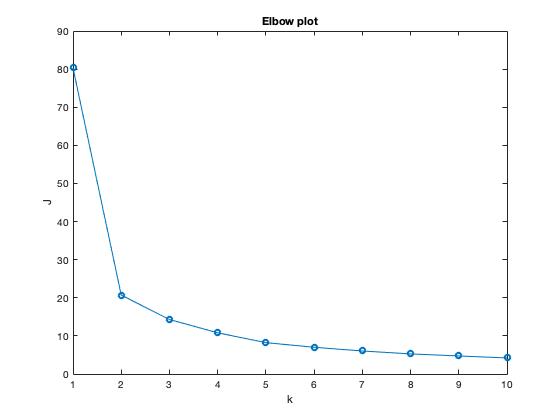
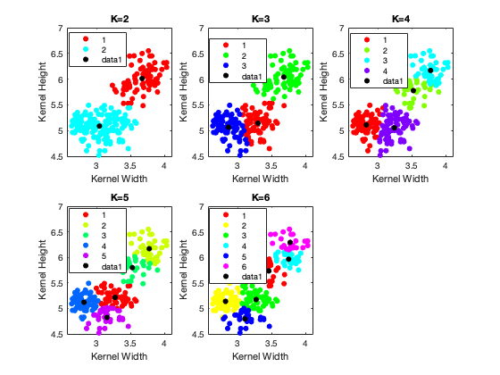
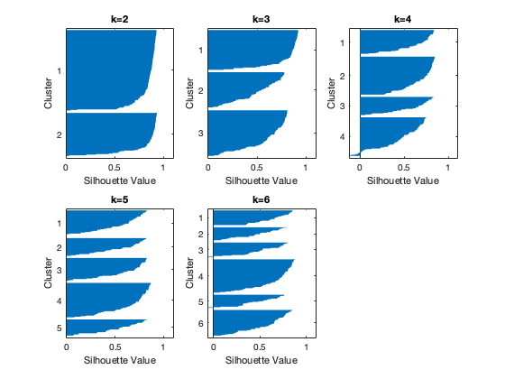

data = readtable('seeds.csv');
kernel_width = data.Var5;
kernel_height = data.Var7;
variety = data.Var8;
X = [kernel_width kernel_height];
disp('2a)');
figure(1);
J = [];
for k=1:10
[idx, C, sumd] = kmeans(X, k, 'Start', 'Sample', 'Replicates',100);
J = [J; sum(sumd)];
end
plot(1:10, J,'-o');
title('Elbow plot');
xlabel('k');
ylabel('J');
snapnow;
disp('I would consider points k=2 or 3 to be the elbow.');
disp('2b)')
disp('In the figure the legend data1 corresponds to centroids')
figure(2);
K = [2, 3, 4, 5, 6];
for i=1:size(K,2)
subplot(2, 3, i);
[idx, C] = kmeans(X, K(1,i), 'Start', 'Sample', 'Replicates',100);
gscatter(kernel_width, kernel_height, idx);
xlabel('Kernel Width');
ylabel('Kernel Height');
hold on;
plot(C(:,1), C(:,2), '.k', 'MarkerSize', 15);
title(strcat('K=', int2str(K(i))));
end
snapnow;
disp('2c)')
figure(3);
for i=1:size(K,2)
subplot(2, 3, i);
[idx, C] = kmeans(X, K(1,i), 'Start', 'Sample', 'Replicates',100);
[s, h] = silhouette(X, idx);
title(strcat('k=',int2str(K(1,i))));
fprintf("K=%d , Avg. silhouette score=%f \n", K(1,i), sum(s)/size(s, 1));
end
disp('We see that the silhouette score for K=2 is the maximum. We know that the clusters are well seperated');
disp('when the score is close to 1. This result matches the conclusion from the elbow plot. Hence optimal K=2');
snapnow;
2a)

I would consider points k=2 or 3 to be the elbow.
2b)
In the figure the legend data1 corresponds to centroids

2c)
K=2 , Avg. silhouette score=0.831273
K=3 , Avg. silhouette score=0.642039
K=4 , Avg. silhouette score=0.579551
K=5 , Avg. silhouette score=0.589436
K=6 , Avg. silhouette score=0.578406
We see that the silhouette score for K=2 is the maximum. We know that the clusters are well seperated
when the score is close to 1. This result matches the conclusion from the elbow plot. Hence optimal K=2
